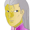
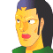

タイトル
|
− FACE OFF − |
中華明代を思わせる豪邸。その武連場。
執事 「失礼。・・・若様、お父上にご挨拶の時間です」
少年 「うん。わかった。・・・師博」
師範 「よし」
執事 「・・・どうですか？ 若様の資質は」
師範 「正直に言わせてもらいますが、あのＲ商会首領の血縁と言う事を抜きにして・・・」
執事 「心得ています」
師範 「充分過ぎる」
執事 「あのような年齢でもそれを感じますか？」
師範 「なに、あれ以上の天才は世にゴロゴロしています。ただ、地位、血筋に加えて天賦の才となると、そうそう他にはいますまい」
執事 「同じような事を、それぞれの先生がおっしゃいます」
師範 「裏社会の首領の後継ぎとして、不足はない、と」
執事 「年齢から見て、次の後継者とはいきませんが、若様なら一族を率いる資格と才能を有しています」
玉座。
少年 「ご挨拶に参りました、父上」
 首領 「おお、お前か。どうだ？ 勉学の方は？」
首領 「おお、お前か。どうだ？ 勉学の方は？」
少年 「はい。最近は、武術と、Ｍマシンの操縦が面白く感じます」
首領 「大人しい子だと思っていたが、お前も男だな。一族を率いるつもりなら、それぐらいの血気は必要だ。だが・・・」
少年 「はい。民くさを動かす術と知略謀略を怠るな、ですね」
首領 「そうだ。お前はいずれ、一族を背負って立つ子だ」
庭で犬と戯れる少年。それを眺めている影。

長兄 「あの子は・・・、厄介だな」

次男 「あ、兄上もそう思われるか」長兄 「お前とは違う意味だろうがな」
次男 「む・・・」
長兄 「確かに天賦の才はあるにせよ、父上にしてみれば恐らく、最後の子だ。あのような猫可愛がりでは大物には育つまい。年端も行かぬと言うのに影武者まで付ける始末だ」
少年の傍らに動かず直立する少年。背格好、顔はうりふたつ。
次男 「た、確かに、俺らの時とは随分な待遇の差だな」
長兄 「このまま行けば、父上亡き後、私の跡を継ぐのはあの子になる。だが、あの子には一族を背負うだけの度量がない」
次男 「そ、それはそうだろうな」
去りつつ、
長兄 「ふン。・・・手前の立ち位置しか見えぬ俗物めが」
背後からきゃらきゃらと笑う女。
女 「ふふふ。お前、今、馬鹿にされたんだよ。お前に継がせるぐらいなら、あの子の方がまだマシだってねえ。あはは」
次男 「な、何をォッ」
女 「あっはははは。そんな事も理解できないんじゃ、あんな子供の方がマシだわね」
次男 「お前、親父の妾の分際で・・・」
女 「・・・ねぇえ、あの子、邪魔じゃない？」
次男 「なに？」
女 「邪魔よねえ」
次男 「くっ・・・」
女 「アタシも邪魔なんだあ」
次男 「どういう・・・」
女 「今、アタシのお腹ン中に、子供がいるのよ」
次男 「おっ、親父の子か！？」
女 「継がせたいじゃない？ この子に」
次男 「どっ、どういう意味だ・・・！？」
女 「簡単よ」
黒服の男達に取り押さえられる女が一人。
母親 「ありえませんっ！ 旦那様以外の男と不義密偵など・・！」
女 「ふふ、うふふ」
首領 「姦通女の戯れ言など聞く耳は持たん」
母親 「本当ですッ！ 旦那様！ 信じてください！」
首領 「連れ出せ」
母親 「旦那様ッ！ せめて、あの子は！ あの子だけでも！」
少年 「母上ぇっ！」
首領 「我が子と思えば、愛おしいその才も・・・」
少年 「父上っ、何故ですっ！？」
首領 「他人の子となれば脅威よの・・・」
少年 「ち、父上・・・？」
首領 「実に、残念だ」
少年 「斬首・・・っ！？ それは・・・、それは真なのですかッ！？」
次男 「お前も、お前の母親のようになる。ほら、見ろ」
少年 「・・・ッ！」
青龍刀で、女の首が斬り落とされるシルエット。
次男 「さて、次はお前だ」
少年 「・・・あ・・・あ・・・」
長兄 「待て。そっちじゃない。こっちだ」
少年そっくりの子供を連れて現れる。
次男 「兄上？」
長兄 「謀られるな。それは影武者の方だ。こっちが本物だ」
影武者 「そ、そんなッ！？ わたくしの方が影にございますッ！」
少年 「あ・・・」
次男 「ぬっ！？ ぬうっ」
長兄 「お前が影だと言うなら、影だと証明してみせよ」
影武者 「そんなッ！ 無茶です！ 本物の証明は出来ても、影の証明などッッ」
長兄 「もっともだな。だが本物ならば、この状況で本物の証明などすまい」
影武者 「そ、それは・・・」
次男 「兄上ッ、面倒だ。二人とも始末してしまえば・・・」
長兄 「いや、こっちだけでいい。お前は血を分けた兄弟の顔も区別できんのか？」
次男 「ぐ・・・」
長兄 「始末しろ」
影武者 「い、嫌だあぁッ！ わたくしではありませんッ！ どうかッ！ どうかッ！ お聞き入れをッ・・・」
言葉虚しく、斬首の音。
少年 「・・・あ・・・あっ」
耳打ちするようにして、
長兄 「何も言うな。お前は九死に一生を得た。野に下って一族の事は忘れろ。それがお前のためだ」
少年の正体に気付いているらしい女、
女 「その子、どうする気だい？」
長兄 「この顔が屋敷にいて、父上が良い顔をする訳はあるまい。御役御免だ」
女 「ふうん？ どうせ買われてきた子だろう？ なら、アタシの小間使いに頂戴よ。構わないでしょう？ 買われてきた子なんだからさ」
長兄 「好きにしろ。ただし、この顔が父上の眼に触れることはまかりならん。・・・仮面を」
黒服が差し出す仮面が、少年に被せられる。
少年 「・・・ッ！」
 仮面の男 「父を失い、母を失い、顔を失い、全てを失った私はこの時に、死んだのだ」
仮面の男 「父を失い、母を失い、顔を失い、全てを失った私はこの時に、死んだのだ」
 ルクレール 「・・・」
ルクレール 「・・・」
暗闇に立つ、無感情なルクレール。
少年 「いっそ本当に殺してくれれば良かった、そう思うほどに・・・。私はただ一族に、汚物扱いされ、屈辱の日々を過ごし、それでも虎視眈々と復讐の機会を待っていた・・・」
少年 「母を貶め、私を陥れた存在・・・」
ルオ 「もういい、下がれ」
青年 「・・・はい」
青年 （・・・ルオ・ツォートン。あの女が産み落とした災厄。それが、私のいた場所にいる・・・）
仮面の男 「悔やんでも悔やみ切れないのは、私が手を下すよりも先に、あの女が死んだことだ。だが、あの女の死で任を解かれた私は、ようやく野に下ることを許された」
仮面の男 「その時の私に残されていたのは、一族に復讐する・・・。その一念のみ。そのためには、一族に対抗できるただ一つの組織、ユニオンＪに身を寄せること」
仮面の男 「泥水を啜って生きてきた私にとっては、全てが、戦場すらも生ぬるく感じる。ユニオンとの接触に成功した私は、政治と権力の中枢に潜り込む事に成功した」
 仮面の男 「もっとも、計算外の事故もあった。片目を失ったこと・・・」
仮面の男 「もっとも、計算外の事故もあった。片目を失ったこと・・・」
仮面の男 「・・・そして再び、この仮面を被る事になるとは思わなかったが」
シャイロン 「私が一族の下で学んだ謀略知略は無駄ではなかった。・・・計画は順調に進んでいる。セグメントの掌握も、いや、ユニオンさえも・・・」
シャイロン 「そして私は・・・」
 クブラカン 「君に話がある。同志、ハン・パーテーカル」
クブラカン 「君に話がある。同志、ハン・パーテーカル」
 ハン 「アンタが・・・、クブラカン・・・」
ハン 「アンタが・・・、クブラカン・・・」
クブラカン 「君がエクレシアのまどろっこしいやり方に不満を抱いている事は知っている。救世主や、予言、そして私を訝しんでいる事もね」
ハン 「ああ。その通りだ」
クブラカン 「君に托したいモノがある。これひとつで、戦局は一変するだろう」
ハン 「・・・どういうこった」
クブラカン 「セツルメント降下・・・。それでわかってもらえるかな」
ハン 「笑わせるな。無駄だ。地球にはセツルメント降下を阻止する衛星兵器がある。そんな事は誰でも・・・」
クブラカン 「そうでもないな。あくまでアレは、過去に落とされたセツルメント物量を元に計算している。ドーム型とまではいかないが、シリンダー型最大級の廃棄セツルメントを手に入れているとしたら・・・」
ハン 「それを・・・、落とすと言うのか？」
クブラカン 「望むのならば、君自身の手でね」
シャイロン 「後のことは、君も大体知っているだろう？」暗闇で、変わらず虚ろなルクレール。
ルクレール 「・・・・・」
シャイロン 「大戦の勃発。そして、リカード大将の逮捕。・・・ルクレール・ミロ、君にはもう少し働いてもらう」
シャイロン 「もう少しだ。もう少しで、世界は私の望む形になる・・・」